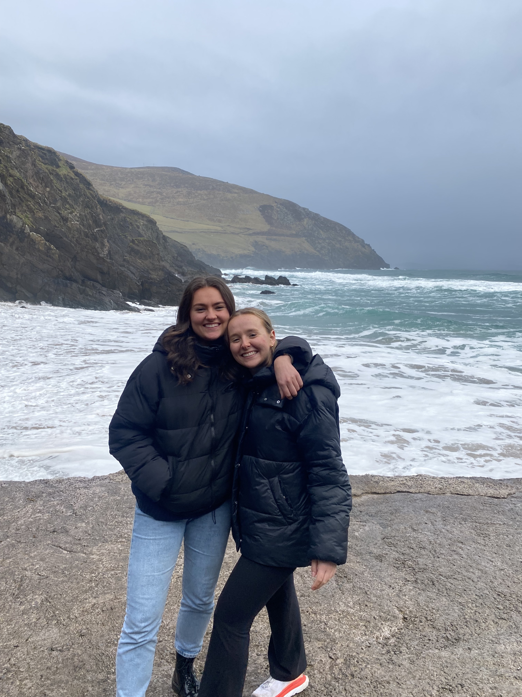

BLOG
- Travel

- In 2022, I had the chance to travel to so many amazing places. I studied abroad in Dublin, Ireland for five months and travelled Europe on the weekends. I got to visit my sister in Paris, visit friends in London, Florence, and Prague, and see so many other amazing places. My favorite city was Amsterdam. I visited during the tulip festival and had the most amazing time exploring the city in the sunny weather.
- Cooking
- One of my favorite hobbies is cooking. I love finding new recipes online and creating my own rendition in my college kitchen. Read along to find out more about what's been cooking!
- Lifestyle
- Read along to hear about what I'm up to! Whether its finding new restaurants with my friends, trying new workouts, finding new Tv shows, books, movies, and podcasts I love, or so much more.